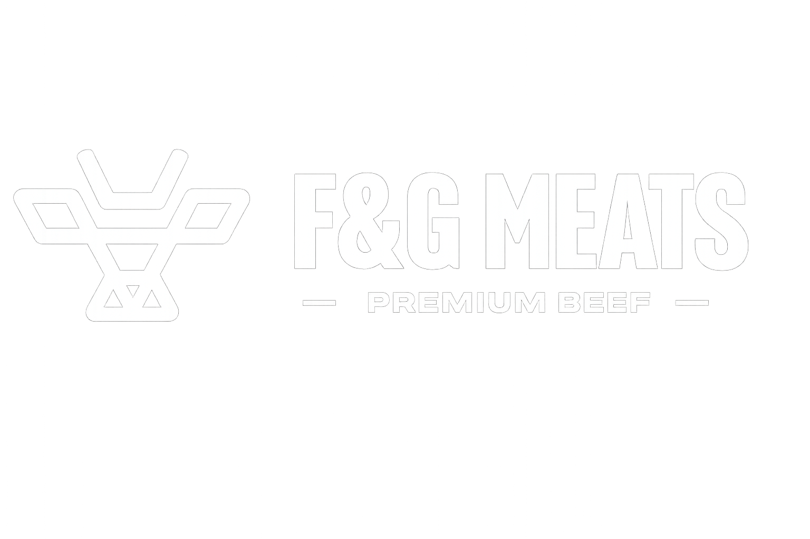

A Curated Selection
F&G American Wagyu
While most American Wagyu programs are designed purely to maximize marbling, the result is often overwhelming — too rich, too fatty, difficult to build a full dining experience around. Our program takes a different approach.
Sourced from small, family-run ranches across the Midwest. Pure Tajima Wagyu bloodlines crossed with Black Angus, raised under strict "Never Ever" protocols — no hormones, no antibiotics, no shortcuts.
BMS 9+ Tomahawk and Tenderloin. Grain-finished for deep marbling, with grass-finished options available. Carcasses hung seven days post-harvest, subprimals wet-aged up to thirty days for tenderness and optimal yield.
F&G American Wagyu
"This is not Wagyu designed for three bites.
This is Wagyu designed to live on a menu."
Hannari A5 Japanese Wagyu · Kyoto, Japan
Hannari represents the true expression of Japanese Wagyu at its highest level — not just in grade, but in philosophy. The name itself is Kyoto dialect, meaning "elegant, bright, and gorgeous."
The A5 New York Strip comes from Kuroge Washu (Japanese Black) heifers — young female cattle that have never calved — raised exclusively in the Tamba mountains of Kyoto, surrounded by clean underground water and open air. Heifers are significantly harder to fatten than steers and far rarer in distribution, but they produce a distinctly silky fat, rich in oleic acid, and a leaner, more refined red meat high in carnitine.
The cattle are raised stress-free and fed with BIOBALANCE — a proprietary lactic acid fermented feed using a globally unique antifungal bacterial strain. Feed composition is controlled and adjusted across all 365 days, calibrated precisely to each animal's growth stage and the day's temperature. The result is healthy, stable fattening that produces not just high marbling, but a specific kind — fine, evenly distributed, and integrated into the muscle.
Hannari A5 Japanese Wagyu
In today's market, the term "A5" has become widespread — but not all A5 is created equal. Much of what is available is produced at scale, sourced from multiple farms, and pushed through accelerated feeding programs that prioritize fat accumulation over overall balance. The result is often intensely rich, but lacking in refinement and consistency.
Hannari takes a different path. Each animal is selected with intention, raised with a focus on uniformity, and finished in a way that produces a specific type of marbling — creating a clean, melting texture rather than an overwhelming one.
For a restaurant, this is more than a product. It is a statement. The kind of item that defines a menu, elevates perception instantly, and creates a moment guests remember long after the meal is over.
"This is not just A5 Wagyu.
This is curated Japanese Wagyu — selected, not sourced."
Hannari A5 Japanese Wagyu
Greater Omaha Prime Angus
Something entirely different, but equally essential — consistency at scale, built over more than a century of discipline and refinement. Founded in 1920, Greater Omaha is one of the largest independent beef packers in the United States, fully integrated from sourcing to distribution.
Prime New York Strip, Prime Ribeye, Prime Filet Mignon. Sourced from the Midwest Corn Belt. Predictable yield, reliable sizing, a product that performs under pressure in a professional kitchen. Every single time.
Greater Omaha Prime Angus
"This is the beef you build a menu on.
This is the program that lets everything else work."
F&G Meats
At the core of what we do is access. We source and allocate some of the most exclusive beef programs available anywhere — including the only Star-K Kosher Wagyu program in the United States.
"It's not just about having great beef.
It's about having something no one else has."